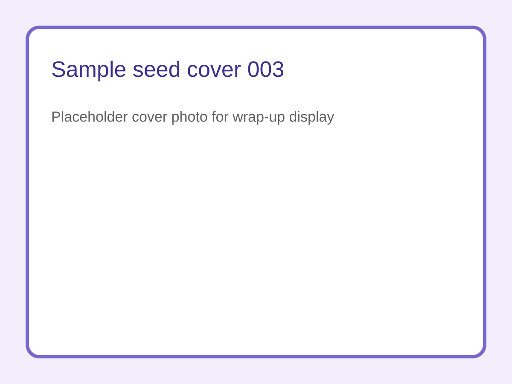
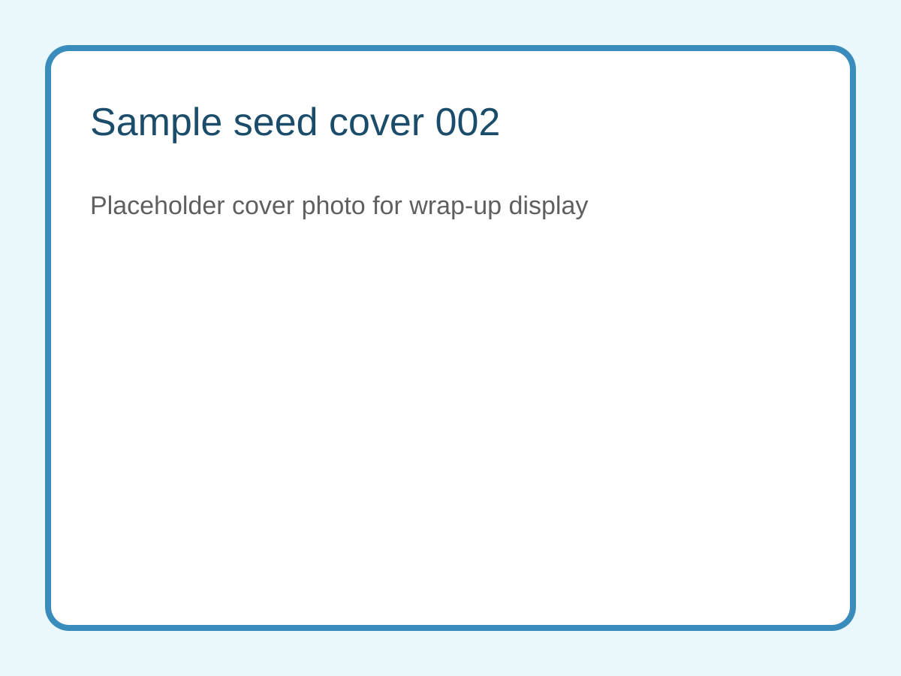
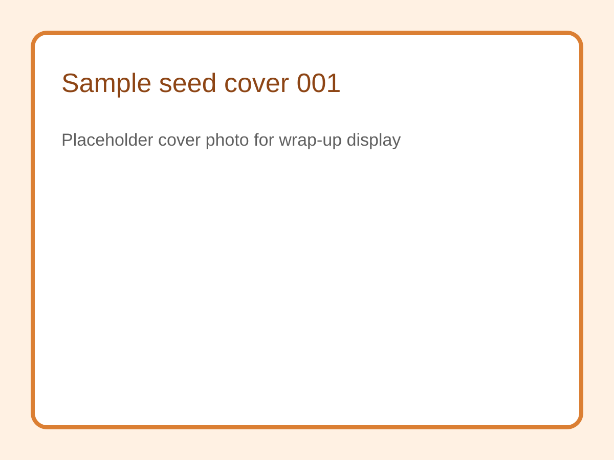

Red Agent Network BD Wrap-Up
小红书种子库 Wrap-Up Display
这个页面只消费 GitHub 里的小红书种子和封面图，用来做项目收尾展示，而不是运营后台。可选备注会在这里展示，缺省采集者统一按 Zeena 处理。
- shanghai-demo-day


shanghai-demo-day
示例-林未
团队：虾网探针组
做线下参与者发现与资料沉淀。
现场愿意后续配合数据采集。
采集时间：2026-04-08 12:05 UTC
采集者：Zeena
打开小红书主页